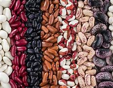

Feijão

O feijão é uma leguminosa amplamente cultivada e consumida em muitas partes do mundo. Ele pertence ao gênero Phaseolus e é conhecido por ser uma importante fonte de proteínas, fibras e outros nutrientes essenciais. Existem muitas variedades de feijão, incluindo feijão preto, feijão carioca, feijão vermelho, feijão branco e feijão verde. Cada tipo tem características distintas de sabor, textura e cor.
Épocas de plantio recomendadas variam de região, mas de forma geral os períodos recomendados são:
Região Sul: Outubro a dezembro (primeira safra) e janeiro a março (segunda safra ou safrinha).
Região Nordeste: Maio a julho (primeira safra) e novembro a dezembro (segunda safra ou safrinha).
Região Sudeste: Outubro a novembro (primeira safra) e janeiro a fevereiro (segunda safra ou safrinha).
Região Norte: Maio a julho e novembro a dezembro
Região Centro-Oeste: Setembro a novembro (primeira safra) e janeiro a fevereiro (segunda safra ou safrinha).
O tempo médio entre o plantio e a colheita do feijão geralmente varia de 70 a 120 dias, dependendo das condições específicas e da variedade utilizada.